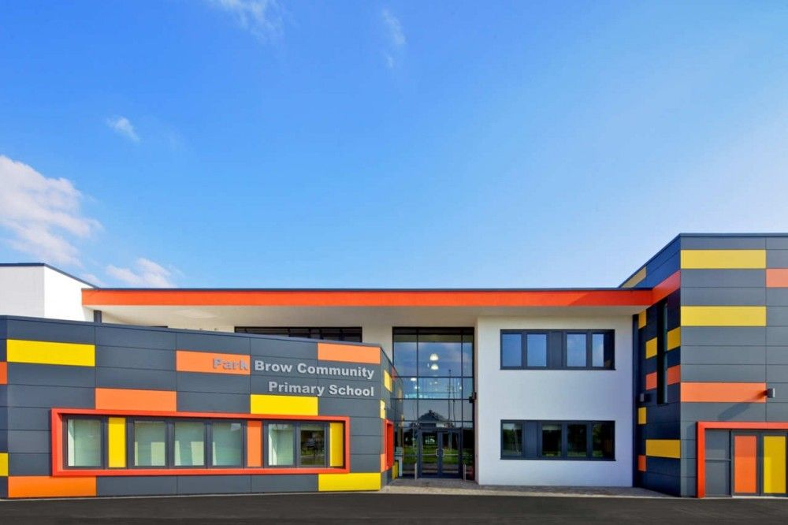
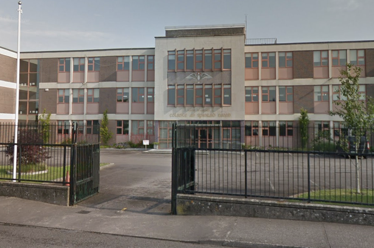

Primary School Education
I went to Cork Educate Together National School. Started in September of 2005 and graduated summer 2013
The highlight of my primary education was
performing gamelan live with the Icelandic group Amiina in the Opera House here in Cork.

Secondary School Education
I went to Coláiste an Spioraid Naoimh. Started First Year in September 2013 and completed my leaving cert in June 2019.
For the junior cert I studied 10
subjects: French, maths, science, English, Irish, technical graphics, business, CSPE, geography and Religious Education.
For the leaving cert I studied 7: French, English,
Irish, maths, geography, design communication graphics and biology.
The highlight of my secondary education was when I went to France for 2 months at the beginning of
transition year to see how their education system differs from our own.

Third Level Education
I started first year of BIS in UCC in September 2019.
My highlight so far is the great friends I have already made and learning something I am
actually interested in.